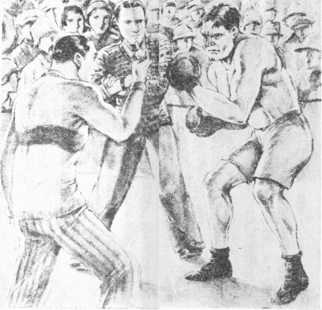

「きみ！ ブルはなまいきじゃないか？」と、
一人が小声で、ささやくと、
「そうだよ、ブルはなまいきだとも！ あんなにいばる男は、世界じゅうにないぜ」と、別の一人が答える。しかし、これも小声だ。
みんなが「ブルはなまいきだ」という。けれど、大きな声でいうものは
一人もない。ブルにきこえたら、それこそ、どんな目にあわされるかしれないからだ。なにしろブルは強い。すごく強いんだ。
拳闘の第一選手だし、おまけに、非常ならんぼうものだ。だれ一人、ブルにかなうものはない。
「来たよ来たよ、だまって！」
ブルがくると、だれもだまってしまう。うっかりして、相手になると、すぐにらんぼうされるからだ。それほど、みんながブルを、こわがってる。ガンと一つ顔でもなぐられたら、
頬が五
日もいたんで、一きれのパンも、かめなくなる。スープばかり
吸っていなければならない、という
評判なのだ。
そんな評判が、ほんとうだろうか？ しかし、ブルの顔とからだつきを見ると、だれでも「なるほど」と思わずにいられない。――犬に「ブルドッグ」というのがいる。からだの
幅がひろくて、
骨組みが太い。肉という肉がはりきってる。頭が大きくてまるい。鼻は低くて上を向いてる。下のあごが上のあごよりつき出ていて、口がひらべったく大きい。かみついたとなったら、死んでもはなさない。すごい
猛犬だ。この猛犬の「ブルドッグ」と、いまみんなが「なまいき」だというブルとは、顔も、からだつきも、かみついたら、死んでもはなさないというすごい性質まで、そっくり似てるんだ。いや、似てるから「ブル」とあだ名をつけたのだ。ほんとうの名前は「ポール」だ。けれど、だれも、「ポール」なんて、やさしい
呼び
方をするものは、
一人もいない。かげで「ブル」「ブル」という。そのブルと顔を見合わせたときは、ソッとだまってしまう。
すると、ブルは、みんながだまって、相手にしなくなったから、二、三日前から一人でおこってる。おこっても、相手がないから、けんかができない。そこで、
洗濯代をはらわずにいるのだ。すると、洗濯屋のジョージが、さいそくにきた。このジョージも強い。牧場で牛があばれだしたとき、走っていってとりおさえたのは、ジョージの力だ。
「ポールさん、洗濯代をはらってください」と、ジョージがきていうと、
「なに？」ブルが下あごをつき出して、ニヤリとわらった。
さあブルのらんぼうがはじまるぞ！ と、みんなが青くなった。ちょうど食堂にいたときだ。中には焼き肉を半分、食いかけたままで、コソコソと
逃げだしたものもいる。ぼくは、このとき、すみの方で、ジャガイモを食いかけていた。
「なにって、前の月の
洗濯代が、まだいただかずにあるんです。ぼくが主人にさいそくされて、こまってるんですから、どうかおはらいください、ポールさん」と、ジョージがブルに、ていねいにいってる。
「ハッハッハッ」と、ブルが、わらったかと思うと、いきなりどなりだした。
「ヤイ、ジョージ！ きさまはおれに、
恥をかかせたな、みんなの前で、さいそくなんかしやがって、こい！ もすこし前へこい！」
「いや、恥をかかせるなんて、そんなことが、あるもんですか。みんなの前でとおっしゃっても、ここの
倶楽部の方ばかりで、みなさんは
仲のいい兄弟のような方じゃありませんか」と、ジョージが、やさしくいうと、
「だまれッ！ なにが兄弟だ。きさままでおれに反対するかッ」
と、いきなりブルが立ち上がった、と思うと、ジョージにとびかかっていった。ジョージもおこった。ものもいわずにブルへ打ってかかる。打たれてブルはすごく顔色をかえた。と見るまに組みついた。大げんか、
大格闘になった。みんながバラバラと
逃げだした。けんかをとめたりしたら、あとで、「ヤイ、なぜとめた。おれの勝つけんかを、なぜとめた」と、ブルがくってかかる。しかし、だまって見てたら、
「きさま、なぜ見てた。なぜ加勢しなかった」と、やはりおこってくる。もしも加勢したら、「オイ、おれが弱いと思ったのか。さあこい、きさまが相手だ」と、どうしてもつっかかってくる。それを知ってるから、みんなが逃げだしてしまって、ぼくばかりのこった。ジャガイモを食いながら、目の前の大格闘を見てると、
「エイッ！」すごい気合いとともに、ブルが、ジョージのからだを、つり上げた、と思うと、
「ウッ」ジョージが、ブルに、しがみついた。
「な、なにをッ！」
と、すごい力をからだ中にこめたブル、いきなり、ジョージを
肩の上までグッとさしあげると、そのまま下へ力いっぱい投げつけた。
「ウーン」と、いったきり、さすがのジョージも、
床の上にひらたくなったまま、肩で息をしてる。起きられないのだ。
ブルは、息もつかずに、ぼくの方を、ジロリと見て、
「どうだ？ おれに手向かいするやつは、ヘッ、こんなものだぞ！」
と、いうと、
廊下の方へ、ノソリノソリと出ていった。どうしたのか、ぼくにくってかからない。――ハハア、ブルのやつ、ぼくが日本人だから、すこしはこわがってるんかな？ と、そう思いながら、ぼくはジョージの
倒れてるところへいって、だきおこしてやった。
ブルは、牛より強いジョージに勝ってから、いよいよらんぼうになった。
洗濯代ばかりでなく、
倶楽部の代金まで、まるではらわなくなった。この
倶楽部というのは、学生の寄宿舎なのだ。名前を「ラサハ
倶楽部」という。「ラサハ」というのは、ギリシャのことばで、「友だちの愛」という意味だ。ところが、ブル
一人のらんぼうで、みんながビクビクしてる。「友だちの愛」が、ブルのために、やぶれてるのだ。このみんなは、カリフォルニヤ大学の学生で、その大学は、
米国の大都会サンフランシスコにある。ぼくは、
和歌山中学を卒業してから、このカリフォルニヤ大学へはいって、そして、ラサハ
倶楽部に、寄宿してたのだ。日本人はぼくばかり、ほかはみんな、米国人だ。ブルを合わせて四十八人、そのほかに、フランクという
倶楽部長がいた。このフランクが、ぼくの
部屋へきて、ほんとうにこまってる顔をしながら、
「
内村君、ブルが下宿代をはらわないんだ。しかし、追い出すといったりしたら、それこそたいへんだしね。どうしたものだろう？」と、相談しだした。
「さあ、
拳闘の第一選手だというんだから、いばらしておくさ」と、ぼくは、ブルなんかなんとも思ってない。すると、
「ただいばるだけならいいが、ブルがいるので、
倶楽部を出ていくものもあるしね、なんとかならないものだろうか？」と、
倶楽部長フランクが小声でいう。
「なんとかならないものかって、どうするんだ？」と、きいてみると、
「きみはこの前、ブルが
洗濯屋のジョージを、たたきつけたときに、
一人でジャガイモを食ってたそうだね、ほんとうかい？」と、また、たずねる。
「ウン、食ってたよ、うまかった」
「フウム、すると、ほんとうだね。それがみんなの
評判になってるんだが、きみは、いったい、ブルがこわかないのかい」
「べつにこわかないね」
「ホウ、すると、どうだろう？ きみとブルと試合したら、どっちが勝つと思うね？
内村君」
「それあ、やってみないとわからないさ。しかし、まず負けることはあるまいね」
「エッ、きみ、すると、勝てるつもりかい、ほんとうに？」
「そうさ、日本人は勝つといったら勝つよ」
「フウム、やはり、
拳闘でやるかい？ 試合となったら」
「なあに、拳闘なんか、いらないだろう。ブルが相手なら。そうだね、まず、小指一本さ」
「エエッ？ 小、小指、一本？ きみ、それあ、まったくかい？ 小指一本？」
と、うっかり「小指一本」とぼくがいったのを、
倶楽部長のフランクは、びっくりしてしまって、自分の小指を出して見せながら、
「こ、これで、きみ、ブルに勝つというのかい？」と、目をみはって、
真剣にたずねる。
さあぼくは弱った。フランクの真剣な顔を見ると、「いまいったのはちがうよ、うそだよ、
冗談だよ」ともいえなくなってしまった。しかたがないから思いきって、
「ウン、まず小指一本、……で、いいだろう」と、いうと、
「ありがたいッ！ 実にありがたい！」と、フランクが、いきなり立ち上がった。と思うと、
「きみはラサハ
倶楽部の救い主だ！」と、大声でさけびだしながら、
部屋を出ていってしまった。
これからがたいへんだ。フランクが
倶楽部じゅうのものに、「
内村は小指一本でポールに勝つといってる」と話したらしい。すぐにポールのブルがききつけて、カンカンにおこったのだ。いきなり、
拳闘試合をぼくに申し込んできた。どうもしかたがない。「よろしい。やろう！」とぼくもすぐに返事した。すると、この試合の
評判が、大学じゅうにひろがってしまった。大学でもポールの別の名はブルだ。そこで、
「ブルを小指一本で、日本人の
内村が、投げとばすそうだ」という大評判なのだ。小指のことを、英語で「
赤ん坊の指」という。大きな牛のようなブルを、
赤ん
坊の指一本でなげとばすというんだから、この大評判が、とうとう、新聞にまで出てしまった。いよいよ、大さわぎになって、ミス・ネールという金持ちのお
嬢さんは、この試合に二十万円の
懸賞を出すと、これまた新聞に書かせてしまった。なにしろブルは、
拳闘の第一選手だ。いままでにも名前が知れてる。そのブルと
赤ん
坊の指一本の試合だ。そこへ二十万円の懸賞！ さあもう、たいへんな人気だ。
ところが、ぼくは一時に有名になってしまって、なお弱った。
和歌山中学で
関口流の
柔道を、
初段くらいまでおそわったのだ。だから、ブルをこわがりもしないし、試合したって、三回が三回とも負けるとは思わない。が、しかし、なにしろ「小指一本」には、どうしたらいいか、自分でもわからないんだ。
倶楽部長のフランクに、ふと
冗談にいったのを、とても
後悔したが、もういまのような大評判になっては、追いつかない。食堂へいくたびに、ブルはブルで、ぼくの小指ばかり、にらんでる。みんなはまた、ブルのいないところで、
「
内村君、きみの
赤ん坊の指を大事にしたまえよ！」と、本気になっていう。
新聞記者がまいにち、写真機を持ってきて、
「内村君の
赤ん坊の指をうつさしてくれ」と、たのみにくる。日本の
柔道には、小指一本で勝つ術があるのだと、みんなが信じてるのだ。
写真はもちろん、うつさせなかった。が、ぼくは気が気でない。しかし、弱った顔は見せられない。心の
中で大弱りに弱ってると、いよいよ試合の日になった。
倶楽部のテニスコートが、この日の試合場だ。
審判官は
一人ときめてフランクがなる。ところが、朝、夜の明けないうちから見物人がくるわくるわ、
巡査が交通のとりしまりに十六人もかけつけてきたというさわぎだ。どうもしかたがない。
――ブルとぼくの小指一本の試合だ！
ブルは牛みたいなからだに、
拳闘のしたくをかためて、堂々とあらわれた。ぼくは
背広服の
上着をぬいだきりだ。
柔道の
稽古着も持ってないし、わざと平気な顔をして出ていくと、
「ワーッ」と、四方の見物席はたいへんなさわぎだ。そこでブルとぼくが両方にはなれて立った。
審判官のフランクが、
時計を見ながら、
「はじめ！」と、ふるえ声でいった。第一回の勝負は三分できめるんだ。
見ると、ブル、
今日はまた一だんとすごい顔をしかめて、両手を前につき出しながら、ジリジリ、ジリジリとよってくる。――きたナ！ と、ぼくも身がまえながら、ヒョイと顔の前に左の小指を出してふった。すると、
「ワアーッ！ ワア――」と、何千人という見物人が声をあげて、パチパチと手をたたくひびきが
雷のようだ。

ブルがまっかになった。ぼくの小指を、にらみながら、目が血ばしってる。ぼくはヒクヒクとまた小指をふって見せた。ブルがまっさおになってきた。小指一本が、どんな術があるのかと、気味がわるいらしい。一メートルほど前から近よってこない。
両腕を上下につき出して、顔を低くして、一生けんめいに、ぼくの小指を、にらんでる。そのまま身うごきもしない。こうなると、ぼくは急に愉快になってきた。ふいに、
「
こい！」と、小指をヒクヒクふると、
「…………」ブルが顔をしかめて、ビクッとする。
「ワアーッ」と、見物人はますます声をあげる。
「
こい！」
「…………」ブル、まっさおだ。
汗をながしてる。
「ワアーッ」バチバチバチバチ。「ワアーッ」
「
こい！」ヒクヒク。
「…………」ブル、まったく汗だらけだ。
「あと二十秒！」フランクがいう。
「…………」ブル、また赤くなってきた。
「
こい！」ヒクヒクヒク。
「…………」ブル、目がすわってきた。
「あと十秒！ ……五秒！ ……」
フランクのことばとともに、そのとき、サッとブルが小指へとびかかってきた、
眼にもとまらぬ電光石火、ハッと身をしずめたぼく、頭の上にブルの
腕と
胸がのびてるやつを、そのままの
背負いなげ！ 敵の力で敵をなげる
柔道の、これこそ術だ、みごとにきまって、
「エエイッ！」
ブルのでかいからだがかるくて紙一枚のようだ、とびかかってきた自分の力でさかおとしに、ドスーンとむこうへ
宙返りを打った、と、ぼくはヒラリと左の小指を上げた。
見物人が総立ちになった、さあたいへんだ！ ツンボになるような「ワアーッ、ワワワワワ――」という声が、ぼくの小指一本にあつまってる。フランクもボンヤリしてる。ところが、見ると、ブルが
倒れたままだ。テニスコートのかたいコンクリートの上へ、背負いなげでたたきつけられて、長くなってる。いってみると、目をまわしてるんだ。そこでぼくがうつむいて、手をのばすと、見物人がシーンとしずまった。――よし！ と、ぼくは考えて、ブルの
腹の上へ、うつむいた。柔道には「
腹活」という手がある。腹へ活を入れて、目をまわしてる相手の息をふきかえさせる、これまた術だ。ぼくは、ブルの腹へ、右手で、
「エイッ！」と、活を入れて、左の小指をスッと上げた、そしてヒクヒク動かしてるうちに、
「ウウーン」ブルが、うなると、ムクムク起きあがった、が、ぼくの顔と小指を見ると、おそろしそうに顔色をかえた。
「どうだ？ ポール！」と、いうと、
「…………」ブルのポールが、ふるえながら、ぼくの右手をにぎりしめて頭を下げた。
見物人がみんな四方からワアーッとおりて走ってきた。
あとはいわなくてもいいだろう。ポールはおとなしくなって、ラサハ
倶楽部は「友だちの愛」でさかんになるし、倶楽部長フランクは大よろこびさ。なに？
懸賞の二十万円なんか、だれがもらうものか、ミス・ネールにソックリ返してやったよ。
（昭和六年一月号）